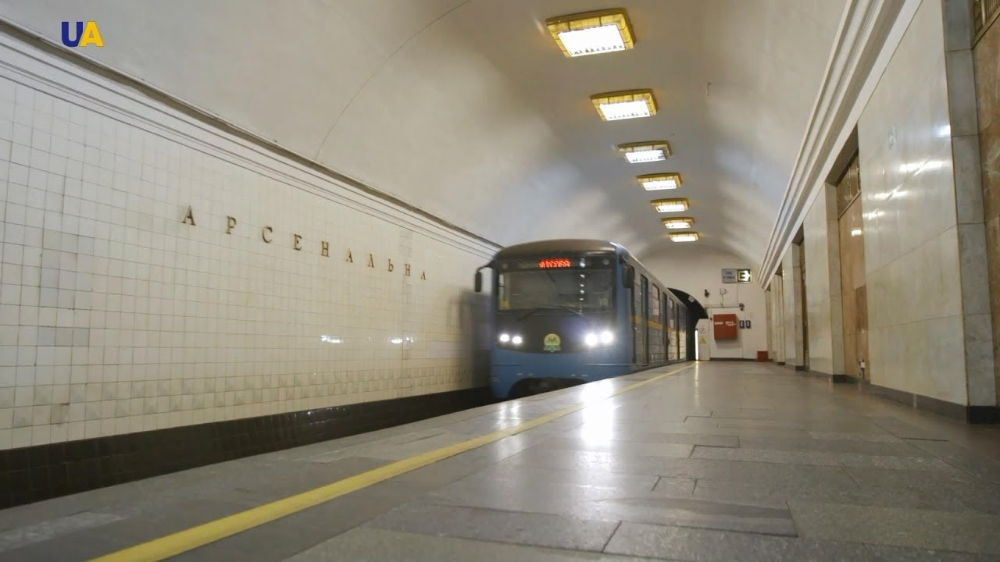
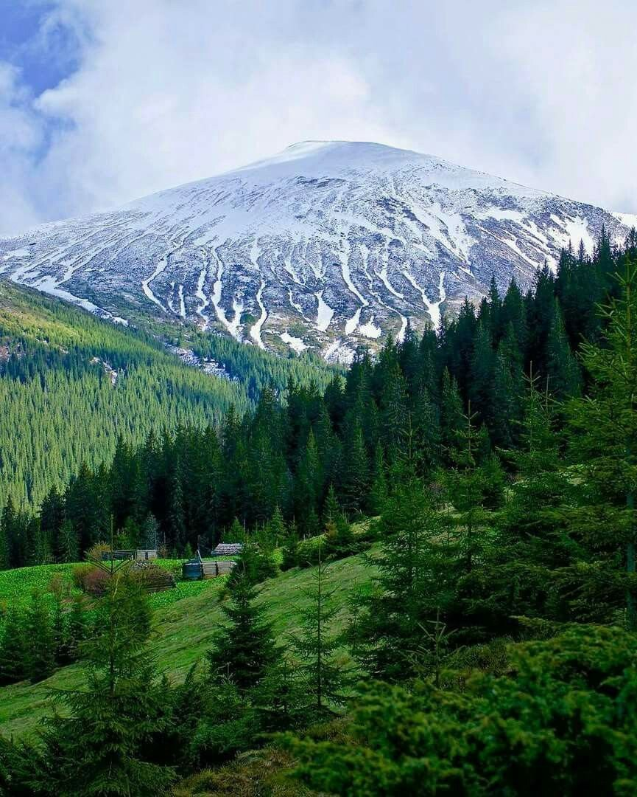
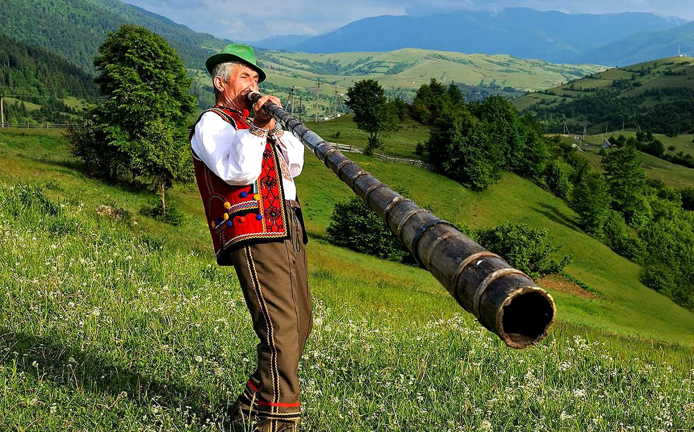
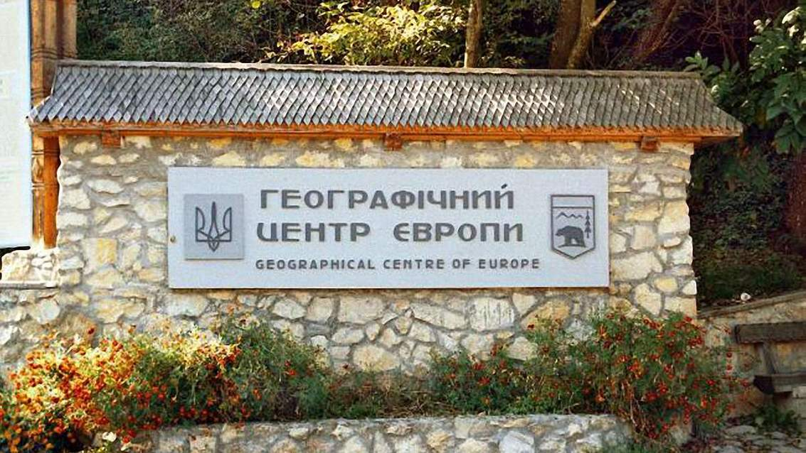
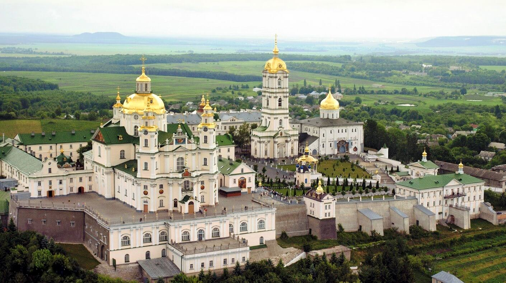
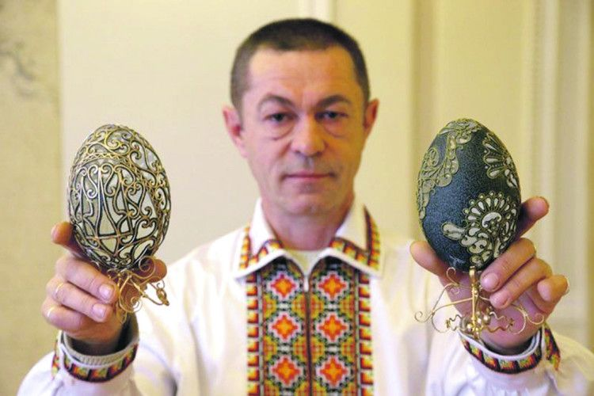

Цікаві факти про Україну.
- Україна є найбільшою за площею країною в Європі. Загальна площа України становить 603,55 кв. км.
- Станція “Арсенальна” Київського метрополітену (Святошинсько-Броварська лінія) сьогодні є найглибшою
станцією метро у світі.
Її глибина становить 105,5 м. Вам доведеться їхати довгих п’ять хвилин на ескалаторі, щоб дістатися до станції.
- McDonald’s у Києві є одним з найбільш відвідуваних ресторанів McDonald’s у світі. Відділення на
Вокзальній площі в Києві посідає 3-тє місце серед найбільш відвідуваних ресторанів МакДональдз у світі.
Ресторан знаходиться поруч із залізничним вокзалом.

- Україна — одна з найосвіченіших націй у світі. Країна посідає 4-те місце у світі за кількістю найосвіченішого населення. 99,4% українців у віці 15 років і старше вміють читати й писати. 70% дорослих українців мають середню або вищу освіту. Навіть всім відомі чемпіони у важкій вазі Віталій та Володимир мають докторські ступені.
- Гора Говерла — найвища гора в Україні. Її висота 2061 м. Гора Говерла є частиною Карпатських гір. З
кінця 19-го століття ця гора є визначною туристичною пам’яткою. З роками гора набула популярності і як
місце для екстремальних видів спорту.

-
- Найдовший духовий інструмент у світі — українська трембіта. Він занесений до Книги рекордів
Гіннеса.
Трембіта — це дерев’яна труба, довжина якої коливається від 2,5 до 8 метрів,
а діаметр — близько 30 мм.
У гірських селах трембіта використовувалася як засіб комунікації, щоб сповіщати про такі події, як початок і закінчення робочого дня, народження дитини, одруження, небезпеку, що насувається тощо.
- Географічний центр Європи розташований у Закарпатській області, неподалік від селища Ділове. Це
один
з п’яти загальновизнаних центрів континенту, але не єдиний, оскільки спосіб обчислення координат
залежить від вашого підходу (інші знаходяться в Литві, Білорусі, Словаччині та Польщі).

- Найдовший духовий інструмент у світі — українська трембіта. Він занесений до Книги рекордів
Гіннеса.
Трембіта — це дерев’яна труба, довжина якої коливається від 2,5 до 8 метрів,
-
Три українські монастирі мають статус лаври. Це Свято-Успенська лавра в Почаєві, Святогірська
Свято-Успенська лавра в Донецькій області та Києво-Печерська лавра в Києві. Архітектурний ансамбль
Києво-Печерської лаври визнаний ЮНЕСКО об’єктом всесвітньої культурної спадщини, а для православних
християн є другим за значенням місцем релігійного поклоніння після Єрусалиму.

- Одним з популярних фактів історії України є історія її мешканців. Артефакти трипільської культури свідчать про те, що люди жили на території сучасної України вже у п’ятому столітті до нашої ери.
- Третя за красою мова у світі. Одним з найцікавіших фактів про Україну є її мова. У 1934 році українська була визнана другою наймелодійнішою мовою світу, поступаючись лише італійській. Того ж року вона була визнана третьою найкрасивішою мовою, поступившись лише французькій та перській. Звісно, це все дуже суб’єктивно і ми всі знаємо на якому місці насправді є наша мова.
-
Понад 50 згадок у Книзі рекордів Гіннеса. Наприклад, Анатолій Бойко з Володимира-Волинського, відомий
як “український Фаберже“, є одним з останніх українських рекордсменів. Він за допомогою крихітних дірочок перетворює звичайні пташині яйця на витвори мистецтва.
У квітні 2021 року художник проткнув 52 700 дірочок у гусячому яйці та 33 300 дірочок у курячому яйці, встановивши два світові рекорди відповідно.
- Перша у світі конституція була розроблена і введена в дію в 1710 році українським гетьманом Пилипом Орликом. Документ мав на меті запровадити поділ влади. У ньому були окреслені обов’язки та права як громадян, так і уряду.
-
Національна бібліотека України імені В. І. Вернадського — скарбниця знань. Це одна з найбільших
національних бібліотек світу. Вона налічує понад 30 мільйонів одиниць зберігання і є скарбницею
знань,
що містить книги, періодичні видання, рукописи, карти та інші документи. Вона також є домом для найбільшої у світі колекції української літератури, яка налічує понад 1,5 мільйона примірників. Бібліотека є популярним місцем як для місцевих жителів, так і для туристів, пропонуючи різноманітні
освітні та культурні заходи
А також ще багато цікавих фактів про Україну можна перерахувати. Такі як: тунель кохання, заповідник Асканія-Нова, Олешківські піски, гіпсові печери на Поділлі.